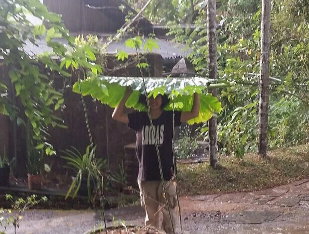
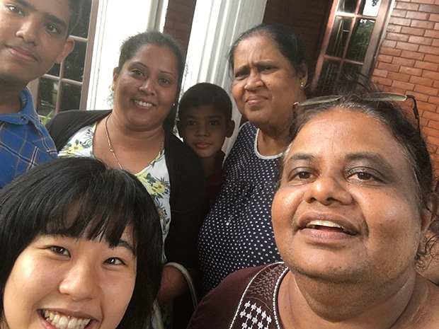

「スリランカでボランティアをするにあたって、自分の英語力を高めたいと思い、いろいろ探していたところ、他のプログラムよりも金額が安く、学生の私でも手が届くプランだったから参加を決めました。
初めてのホームステイだったのですか、あっという間の三か月でした。
とても優しいホストファミリーに出会うことができ、毎日がとても楽しかったです。
お客さんが来る日に、壁を飾ってホストマザーとケーキを作ったり、レッスン後に近所の子どもたちと遊んだり、ホストファミリーだけでなくワラカポーラの人たちも大好きになりました。
低開発村視察はこの村だけに限ったことではないのですか、スリランカでの生活経験を経て、いかに自分の生活が物によって支えられているのかを感じました。
今まで私は英語が大嫌いでした。
しかし、今回このプログラムに参加して学習したことで英語を学ぶことがとても楽しいと感じました。
私は英語の語彙力がとても低いため英語を話すこと、会話をすることに苦手意識がありました。
しかし、先生はわからない単語一つ一つをより簡単な単語に置き換えて説明をして下さいました。
今までわからない単語はすぐに辞書やネットで調べて終わっていたのですが、英単語の意味を英語で覚えることでとても頭に入りやすかったです。
宿題は英語の日記と日本のニュースを調べて次の授業でそのニュースを英語で説明するというものでした。
私は英語の日記を書く宿題が大好きでした。
先生との交換日記の様な気分で毎日書いていました。
初めは一ページ書くことにとても苦労していたのですが、プログラム終盤は何の苦も無く日記を書くことができるようになりました。
二年前にもスリランカを訪れたことがあるのですが、今回の滞在では旅行とは違った目線からスリランカを見ることができました。
観光地に行かなくても美しいものをたくさん感じることができる国だと思いました。
前回はスリランカのホテルに滞在していたので毎日ホテルの料理や外食をしていました。
その際私はスリランカ料理が苦手だなと思いました。
しかし、ホームステイ先のホストマザーの料理はとてもおいしく、今回の滞在でスリランカの料理がとても好きになりました。

こちらのプログラムは、また参加したいと思います。
次回利用することがあればネパールの方に参加してみたいなと思います。
この学習プロジェクトを終えての後悔や不満は本当にないです。
現地の生活に溶け込めたことが一番の経験になったと思います。
何度も同じことを言ってしまうのですが、本当に楽しくあっという間に三か月が過ぎていきました。
日本では大学やバイトといつも時間に追われ疲れ切っていたのですか、ホストの家で過ごした時間は生きていることが楽しいと心から感じるほどのびのびと過ごせました。
スリランカに来て本当に良かったと思います。
英語の勉強だけではなく、スリランカの生活や人間性、環境など幅広い視点から物事を考えることができ、とても貴重な3ヶ月を過ごすことができました。
ホームステイ先のマーネルさんにも大変良くしていただき、充実した時間を過ごせました。
私の人生を色付ける経験をスリランカで沢山することができました。
大変お世話になりました。
この度は誠にありがとうございました。」